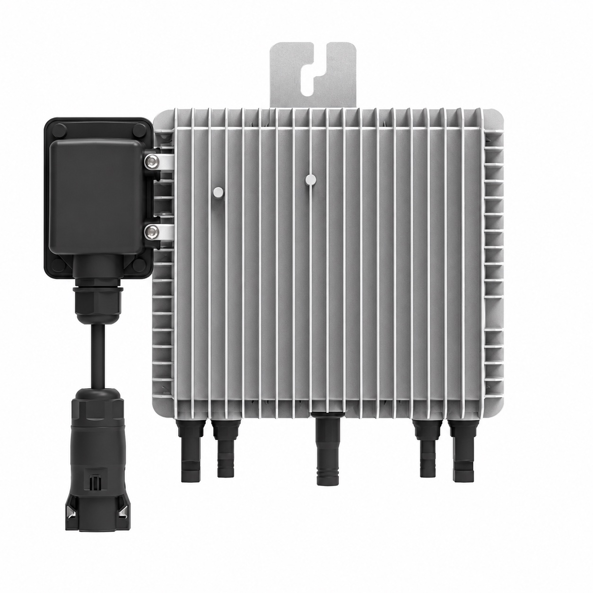

Module-level microinvertersInverters / Module-level microinverters
800 W Dual-MPPT Microinverter
MODEL REFERENCESUN-M80G4-EU-Q0
- AC output
- 800 W
- MPPT trackers
- 2
- PV voltage
- 60 V max.
SUN-M60/80/100G4-EU-Q0 family view; 800 W configuration.